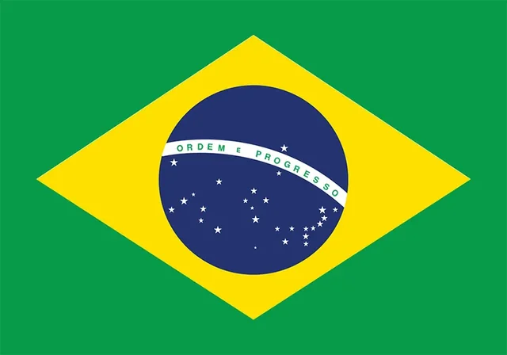

Thomas Guedes
About Me
My name is Thomas and I was born in Brazil and live with my family in João Pessoa, Paraíba. I am currently studying web development and programming. My family is my world and I love spending time with them. I love to play American football and I love to travel to explore new cultures.
João Pessoa, Brazil
Brazil is the largest country in South America and the fifth largest in the world by both area and population. It is home to the Amazon rainforest, which contains 10% of the world's known biodiversity. Brazil is best known for its Carnival, soccer, samba, and vibrant beaches.